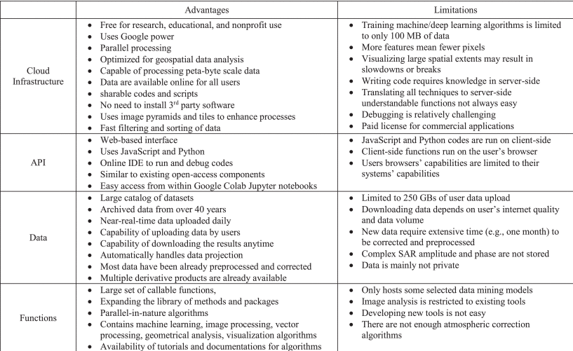

| Remote Sensing Term/function | GEE Equivalent |
|---|---|
| Raster | Image |
| Image Stack | ImageCollection |
| Vector | Feature |
| Vector data | FeatureCollection |
| Join | .distFilter, .spatialFilter |
5 Google Earth Engine
5.1 Summary
Google Earth Engine (GEE) is a cloud product specifically for geospatial analysis. It combines a huge catalogue of satellite and geospatial data with a platform for simplified analysis with the benefit of using Google computational power for data processing at large scale (Google (2024)). A key part of GEE is that it is designed to make sharing of results and reproducibility easy for researchers with only limited technical expertise (Gorelick et al. (2017)). GEE provides both a code engine environment and a Python based API that enables automation of process.
We will briefly look at a few of the main advantages/limitations of GEE in this section but the full range of benefits are too numerous to cover here so are summarised in Figure 5.1 along with some of the limitations.

5.1.1 Terminology
At a very basic level there are some terminology and functions that differ to that which we are used to in other remote sensing applications (Table 5.1). However this is a relatively minor issue although it could still cause initial confusion and put users off persevering with GEE despite the huge benefits it can bring. Thankfully there is very comprehensive user guides and tutorials available from Google. Also due to the popularity of GEE there is huge amount user-derived content available.
5.1.2 Server side processing
Rather than running locally, GEE uses server-side processing to leverage Google’s cloud computing power. This reduces hardware limitations and allows for scalability, often using parallel processing. However, this passes management of the execution process to Google, meaning users have limited visibility and control over optimisation. Whilst this is not an issue for most users, expert researchers who require full control over computational workflows may find this restrictive.
5.1.3 Processing Speed
Specifically looking at time savings that can be made by harnessing the computational power of GEE. Hansen et al. (2013) states that it took 100 hours to process ~707 terrabytes of Landsat images for global forest change detection in GEE. Without cloud-based processing it would have taken a million hours (Amani et al. (2020)). That does not even account for the process of retrieval, preparation and storage of those images. For many organisations this wouldn’t even be feasible to process without GEE’s cloud infrastructure.
5.2 Application
One critique that could be aimed at GEE apps is that they do not always analyse the use case they demonstrate. However considering the openness and availability of GEE it cannot be considered as just an academic tool but also an operational one (Kumar and Mutanga (2018)). In fact it provides a very simple way to quickly build an application to raise awareness/profile of a global issue whilst providing the tools for further research into the cause at a local level.
In a key example of a GEE application, Global Forest Change (Figure 5.2) we clearly see the forest loss across the globe. However the app itself despite showing a few case study example locations does not identify any deeper cause of forest change. The associated article (Hansen et al. (2013)) however does provide some possible causes, again in a subset of locations. When considering the global extents and the sheer number of factors including local policies that affect localised forest change this is not necessarily surprising. For academics or researchers this provides the background and visualisations to highlight specific areas of concerns and to focus deeper research and analysis in these areas. Whilst for a non-academic audience it provides the tools to focus resources in the right locations without needing to research and develop the potentially costly tools themselves. This is evident in areas like the Amazon rainforest where Hansen et al’s work has been used to fight illegal deforestation (Gonzales (2019)).
Clearly GEE is useful for analysis that occurs over time but what where near real-time information is required such as in disaster management. The user is constrained to the revisit time of the data supplied by GEE, such as Landsat ~16 days or Sentinel-2 ~5 days. Whilst it is still key to analyse pre and post-disaster imagery such as available through HazMapper (Scheip and Wegmann (2021)) it does not provide the real-time data that can make the difference in effective disaster management. In such instances use of commercially available SAR data (to prevent cloud cover issues) with a lower revisit time could be preferred. The issue with this is the response is often proportional to the available resources for that area, so less affluent and lower profile areas may not have resources to provide access this data (Scheip and Wegmann (2021)), therefore tools such as HazMapper may be the only way to aid management of the disaster so are priceless in these instances.
5.3 Reflection
GEE is undoubtedly an exceptional tool which is a great enabler for remote sensing analysis but also of data visualisation with the ease at which apps can be built and published. I’m really looking forward to delving deeper into GEE functionality over the coming weeks and in particularly building applications. Taking this further I’d like to harness the computational power of GEE to identify tree cover and vegetation health in London and the affects this has on air quality. Also to use this to as the basis to explore what measures are effective in improving air quality. This would also help to investigate how useful GEE is “out the box” to deal with issues at a more localised level. In Figure 5.1 we saw some limitations including only allowing 250gb of user data so if we wanted to use very hi-res commercial satellite data within GEE then this will cause issues especially if wanted to be produce time series analysis that would be especially useful in the use case mentioned.